pacman::p_load(ggrepel, patchwork,
ggthemes, hrbrthemes,
tidyverse) Hand-on Exercise 2 — Beyond ggplot2 Fundamentals
1 Overview
In this chapter, we will be learning about ggplot2 extensions for creating more elegant and effective statistical graphics. The goals of this exercise is to:
control the placement of annotation on a graph by using functions provided in ggrepel package.
create professional publication quality figure by using functions provided in ggthemes and hrbrthemes packages.
and plot composite figure by combining ggplot2 graphs by using patchwork package.
2 Getting Started
In this hands-on exercise, the following R packages are used:
tidyverse (i.e. readr, tidyr, dplyr) for performing data science tasks such as importing, tidying, and wrangling data;
ggrepel for geoms to repel overlapping text labels for ggplot2;
ggthemes for extra themes, geoms, and scales for ggplot2;
hrbrthemes for typography-centric themes and theme components for ggplot2;
patchwork for preparing composite figures created using ggplot2.
The code chunk below uses the p_load() function in the pacman package to check if the packages are installed. If yes, they are then loaded into the R environment. If no, they are installed, then loaded into the R environment.
The dataset for this hands-on exercise is imported into the R environment using the read_csv() function in the readr package and stored as the R object, exam_data.
exam_data <- read_csv("data/Exam_data.csv")Rows: 322 Columns: 7
── Column specification ────────────────────────────────────────────────────────
Delimiter: ","
chr (4): ID, CLASS, GENDER, RACE
dbl (3): ENGLISH, MATHS, SCIENCE
ℹ Use `spec()` to retrieve the full column specification for this data.
ℹ Specify the column types or set `show_col_types = FALSE` to quiet this message.summary(exam_data) ID CLASS GENDER RACE
Length:322 Length:322 Length:322 Length:322
Class :character Class :character Class :character Class :character
Mode :character Mode :character Mode :character Mode :character
ENGLISH MATHS SCIENCE
Min. :21.00 Min. : 9.00 Min. :15.00
1st Qu.:59.00 1st Qu.:58.00 1st Qu.:49.25
Median :70.00 Median :74.00 Median :65.00
Mean :67.18 Mean :69.33 Mean :61.16
3rd Qu.:78.00 3rd Qu.:85.00 3rd Qu.:74.75
Max. :96.00 Max. :99.00 Max. :96.00 The variables in each column
glimpse(exam_data)Rows: 322
Columns: 7
$ ID <chr> "Student321", "Student305", "Student289", "Student227", "Stude…
$ CLASS <chr> "3I", "3I", "3H", "3F", "3I", "3I", "3I", "3I", "3I", "3H", "3…
$ GENDER <chr> "Male", "Female", "Male", "Male", "Male", "Female", "Male", "M…
$ RACE <chr> "Malay", "Malay", "Chinese", "Chinese", "Malay", "Malay", "Chi…
$ ENGLISH <dbl> 21, 24, 26, 27, 27, 31, 31, 31, 33, 34, 34, 36, 36, 36, 37, 38…
$ MATHS <dbl> 9, 22, 16, 77, 11, 16, 21, 18, 19, 49, 39, 35, 23, 36, 49, 30,…
$ SCIENCE <dbl> 15, 16, 16, 31, 25, 16, 25, 27, 15, 37, 42, 22, 32, 36, 35, 45…3 Beyond ggplot2 Annotation: ggrepel
The ggrepel package is an extension of the ggplot2 package, which provides the geoms for ggplot2 to repel overlapping text as shown in the plot above. This is done by replacing the geom_text() and geom_label() functions in the ggplot2 package with the geom_text_repel() and geom_label_repel() functions respectively in the ggrepel package.
ggplot(data=exam_data,
aes(x= MATHS,
y=ENGLISH)) +
geom_point() +
geom_smooth(method=lm,
linewidth=0.5) +
geom_label(aes(label = ID),
hjust = .5,
vjust = -.5) +
coord_cartesian(xlim=c(0,100),
ylim=c(0,100)) +
ggtitle("English scores versus Maths scores for Primary 3")`geom_smooth()` using formula = 'y ~ x'
3.1 Working with ggrepel
The previous scatterplot is re-plotted by replacing the geom_label() function in the ggplot2 package with the geom_label_repel() function in the ggrepel package.
ggplot(data=exam_data,
aes(x= MATHS,
y=ENGLISH)) +
geom_point() +
geom_smooth(method=lm,
linewidth=0.5) +
geom_label_repel(aes(label = ID),
fontface = "bold") +
coord_cartesian(xlim=c(0,100),
ylim=c(0,100)) +
ggtitle("English scores versus Maths scores for Primary 3")`geom_smooth()` using formula = 'y ~ x'Warning: ggrepel: 317 unlabeled data points (too many overlaps). Consider
increasing max.overlaps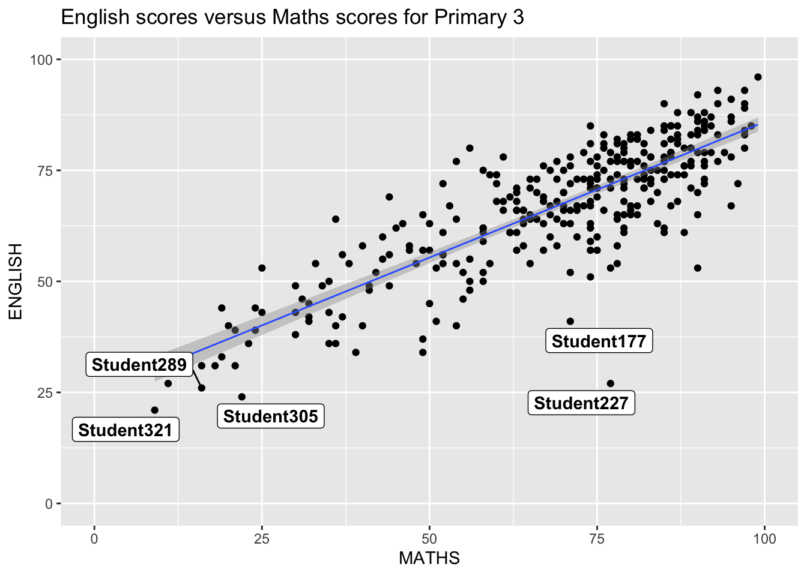
4 Beyond ggplot2 Themes
ggplot2 comes with eight built-in themes, they are: theme_gray(), theme_bw(), theme_classic(), theme_dark(), theme_light(), theme_linedraw(), theme_minimal(), and theme_void().
The following plot uses the default grey theme for the histogram showing the distribution of Maths scores.
ggplot(data=exam_data,
aes(x = MATHS)) +
geom_histogram(bins=20,
boundary = 100,
color="cyan4",
fill="cyan1") +
theme_gray() +
ggtitle("Distribution of Maths scores") 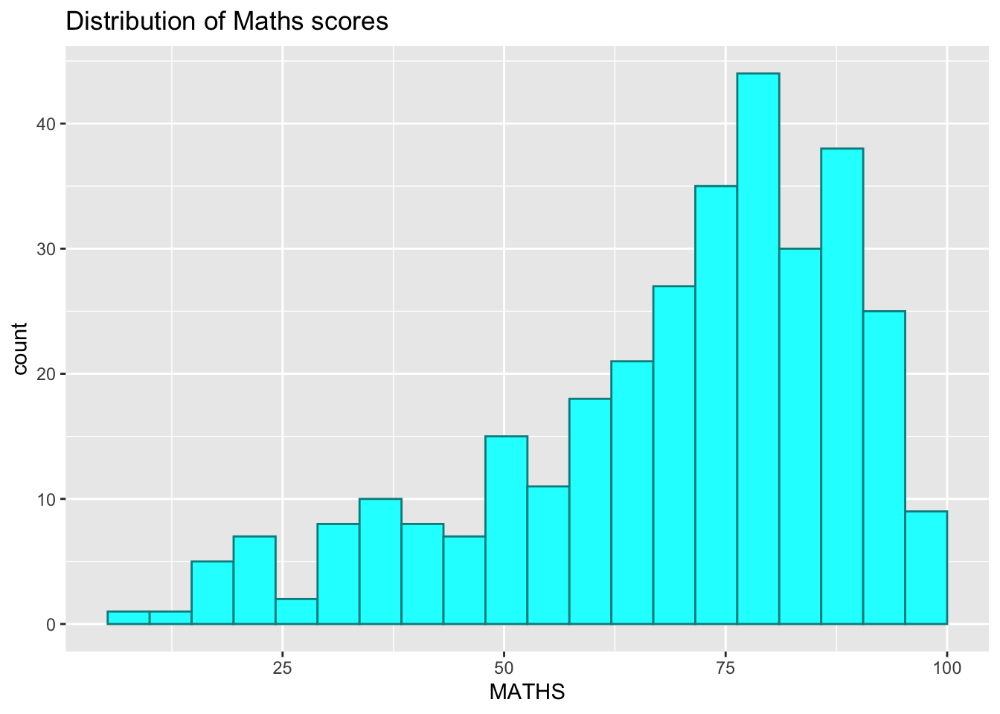
4.1 Working with ggtheme package
The ggthemes package provides ggplot2 themes that replicate the look of plots by Edward Tufte, Stephen Few, Fivethirtyeight, The Economist, ‘Stata’, ‘Excel’, and The Wall Street Journal, etc. It also provides some extra geoms and scales for ggplot2.
ggplot(data=exam_data,
aes(x = MATHS)) +
geom_histogram(bins=20,
boundary = 100,
color = "grey25",
fill = "skyblue") +
ggtitle("Distribution of Maths score") +
theme_economist()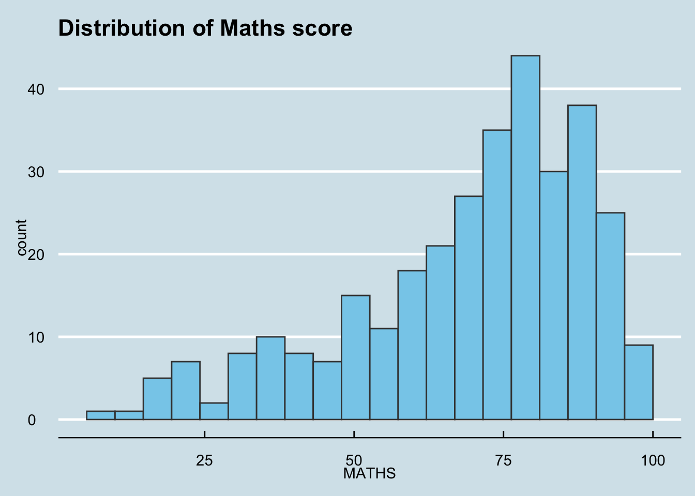
ggplot(data=exam_data,
aes(x = MATHS)) +
geom_histogram(bins=20,
boundary = 100,
color = "grey25",
fill = "red") +
ggtitle("Distribution of Maths score") +
theme_wsj()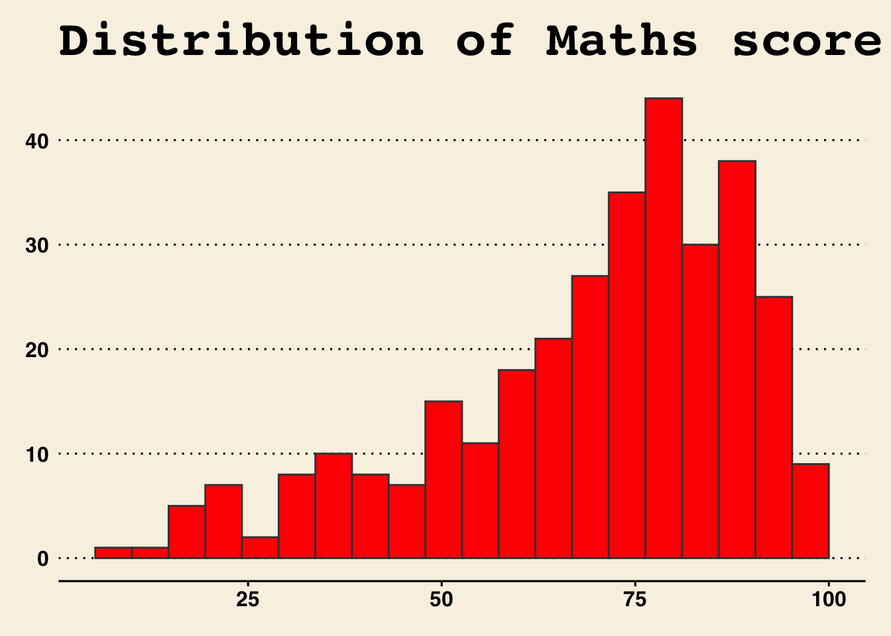
ggplot(data=exam_data,
aes(x = MATHS)) +
geom_histogram(bins=20,
boundary = 100,
color = "grey25",
fill = "grey90") +
ggtitle("Distribution of Maths score") +
theme_calc()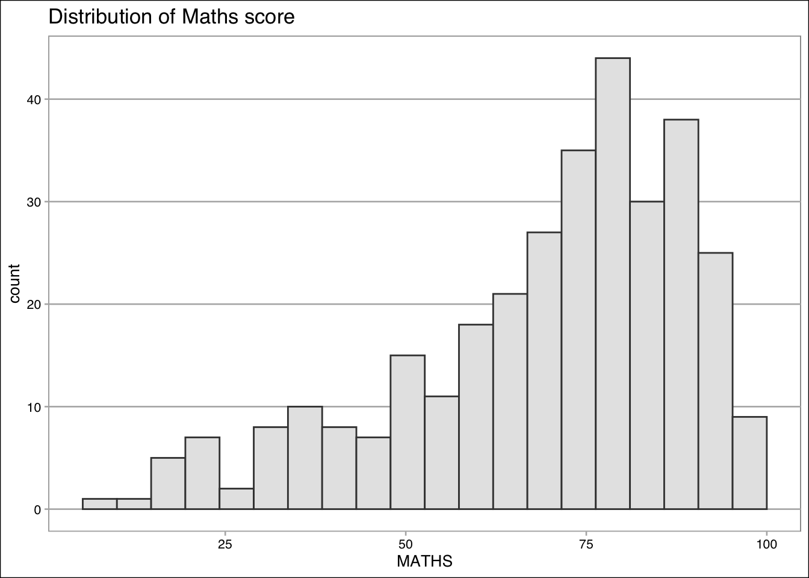
4.2 Working with hrbthems package
hrbrthemes package provides a base theme that focuses on typographic elements, including where various labels are placed as well as the fonts that are used. The second goal centers around productivity for a production workflow. In fact, this “production workflow” is the context for where the elements of hrbrthemes should be used.
ggplot(data=exam_data,
aes(x = MATHS)) +
geom_histogram(bins=20,
boundary = 100,
color="grey25",
fill="yellow") +
ggtitle("Distribution of Maths scores") +
theme_ipsum()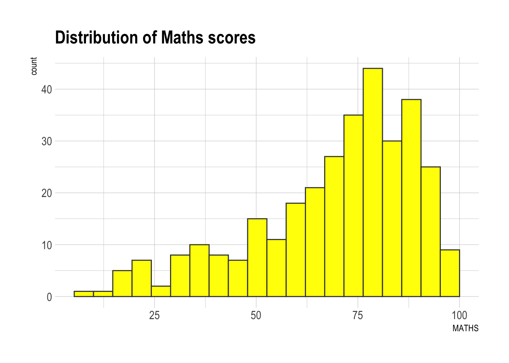
The second goal centers around productivity for a production workflow. In fact, this “production workflow” is the context for where the elements of hrbrthemes should be used. Consult this vignette to learn more.
axis_title_size argument is used to increase the font size of the axis title to 18, base_size argument is used to increase the default axis label to 15, and grid argument is used to remove the x-axis grid lines.
ggplot(data=exam_data,
aes(x = MATHS)) +
geom_histogram(bins=20,
boundary = 100,
color="grey25",
fill="grey99") +
ggtitle("Distribution of Maths scores") +
theme_ipsum(axis_title_size = 18,
base_size = 15,
grid = "Y")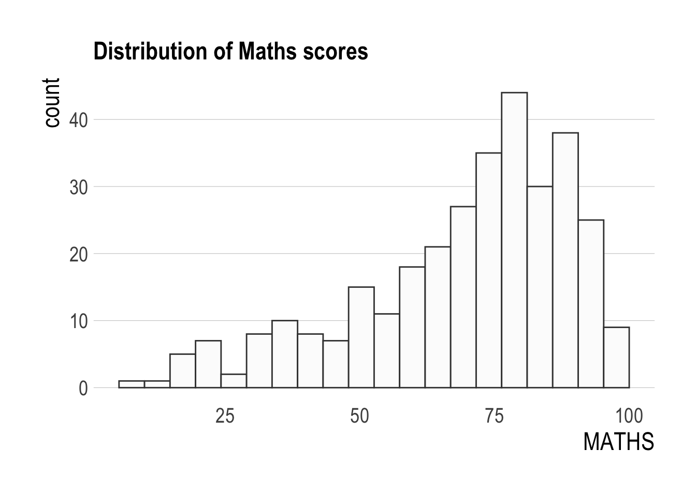
5 Beyond Single Graph
Often, multiple graphs are required to tell a compelling visual story. There are several ggplot2 extensions that provide functions to compose a figure with multiple graphs. A composite plot is created by combining multiple graphs.
To start, three separate statistical graphics are created below, showing the distribution of Maths scores, the distribution of English scores, and the English scores versus Maths scores.
p1 <- ggplot(data=exam_data,
aes(x = MATHS)) +
geom_histogram(bins=20,
boundary = 100,
color="grey25",
fill="grey90") +
coord_cartesian(xlim=c(0,100)) +
ggtitle("Distribution of Maths scores")p2 <- ggplot(data=exam_data,
aes(x = ENGLISH)) +
geom_histogram(bins=20,
boundary = 100,
color="grey25",
fill="grey90") +
coord_cartesian(xlim=c(0,100)) +
ggtitle("Distribution of English scores")p3 <- ggplot(data=exam_data,
aes(x= MATHS,
y=ENGLISH)) +
geom_point() +
geom_smooth(method=lm,
linewidth=0.5) +
coord_cartesian(xlim=c(0,100),
ylim=c(0,100)) +
ggtitle("English scores versus Maths scores for Primary 3")5.1 Creating Composite Graphics: pathwork methods
There are several ggplot2 extension’s functions support the needs to prepare composite figure by combining several graphs such as grid.arrange() of gridExtra package and plot_grid() of cowplot package. In this section, I am going to shared with you an ggplot2 extension called patchwork which is specially designed for combining separate ggplot2 graphs into a single figure.
Patchwork package has a very simple syntax where we can create layouts super easily. Here’s the general syntax that combines:
Two-Column Layout using the Plus Sign +.
Parenthesis () to create a subplot group.
Two-Row Layout using the Division Sign /
5.2 Combining two ggplot2 graphs
Figure below shows a composite of two histograms created using patchwork.
p1 + p2
p1 / p2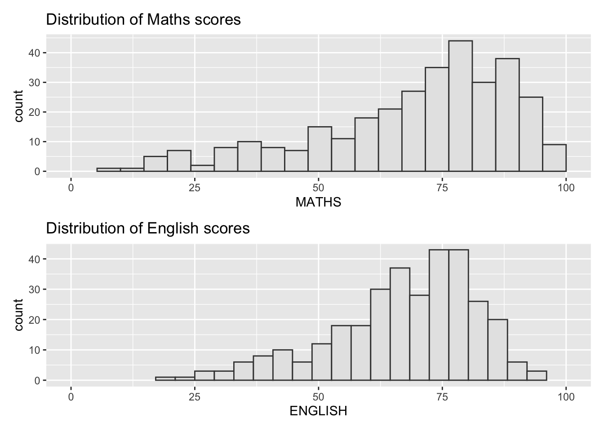
p1 | p2
5.3 Combining three ggplot2 graphs
A more complex composite figure can be plotted using other appropriate operators.
For example, the composite figure below is plotted by using:
“/” to stack two ggplot2 graphs;
“|” to place the plots beside each other; and
“()” to define the sequence of the plotting.
(p1 /p2) | p3`geom_smooth()` using formula = 'y ~ x'
p1 + p2 + p3 + plot_layout(ncol=1)`geom_smooth()` using formula = 'y ~ x'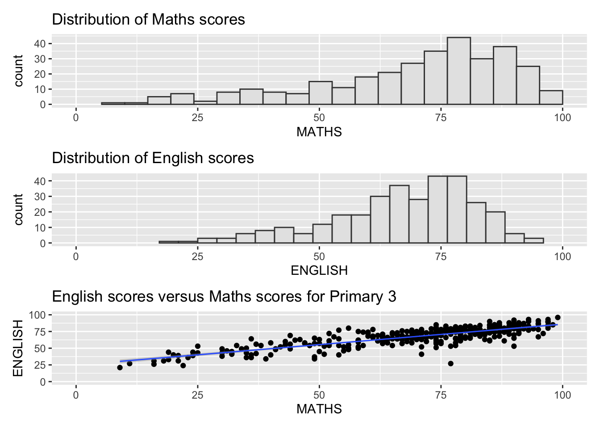
p3 + {
p1 + p2 + plot_layout(ncol=1)
}`geom_smooth()` using formula = 'y ~ x'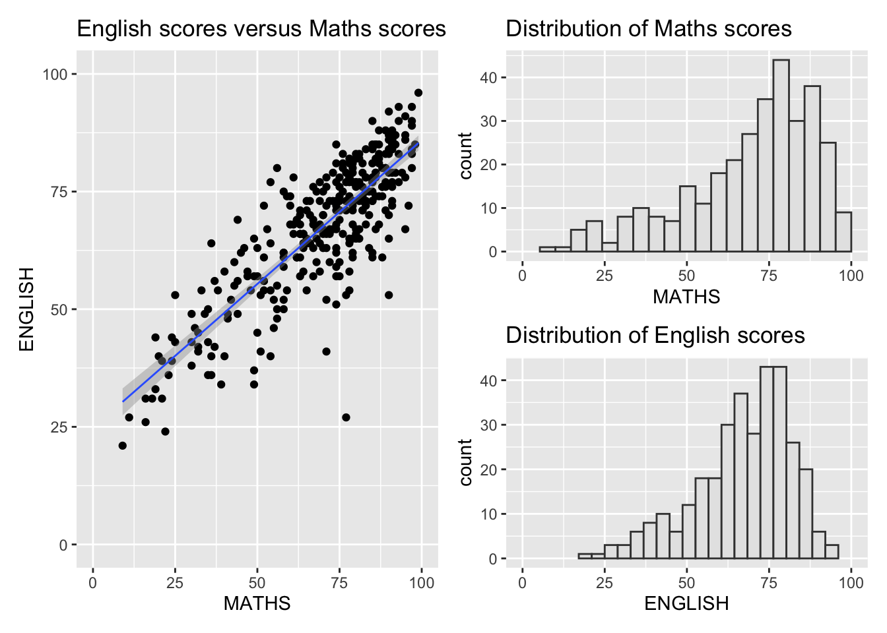
5.4 Creating a composite figure with tag
The patchwork package also allow subplots to be identified in text using its auto-tagging capabilities.
((p1 / p2) | p3) +
plot_annotation(tag_levels = 'I')`geom_smooth()` using formula = 'y ~ x'
5.5 Creating figure with insert
Besides providing functions to place plots next to each other based on the provided layout, the inset_element() function in the patchwork package can place one or several plots or graphic elements freely on top or below another plot.
p3 + inset_element(p2,
left = 0.02,
bottom = 0.7,
right = 0.5,
top = 1)`geom_smooth()` using formula = 'y ~ x'
5.6 Creating a composite figure by using patchwork and ggtheme
Using both the ggthemes and patchwork packages, a composite figure with The Economist theme is created.
patchwork <- (p1 / p2) | p3
patchwork & theme_economist() +
theme(plot.title=element_text(size =10),
axis.title.y=element_text(size = 9,
angle = 0,
vjust=0.9),
axis.title.x=element_text(size = 9))`geom_smooth()` using formula = 'y ~ x'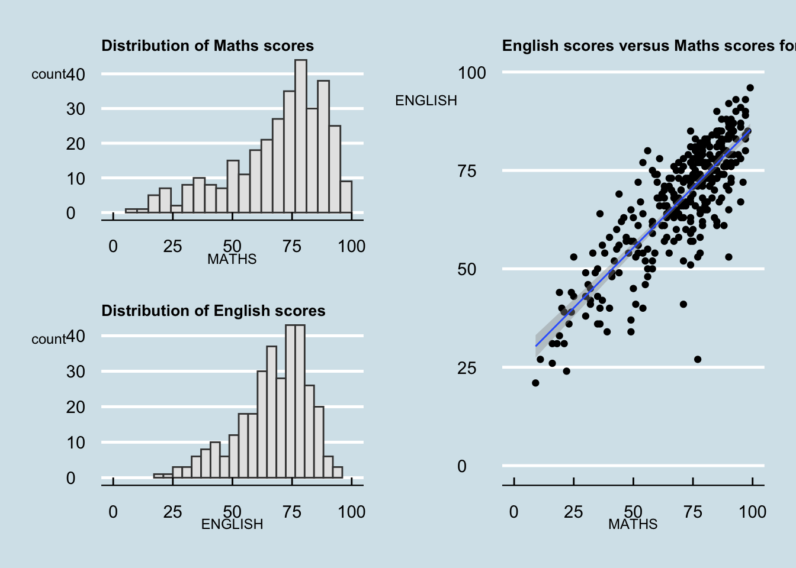
patchwork <- (p1 / p2) | p3
patchwork & theme_solarized_2() +
theme(plot.title=element_text(size =10),
axis.title.y=element_text(size = 9,
angle = 0,
vjust=0.9),
axis.title.x=element_text(size = 9))`geom_smooth()` using formula = 'y ~ x'